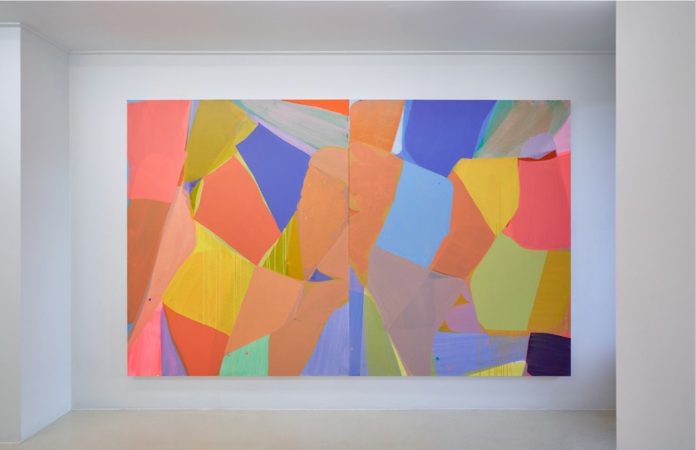
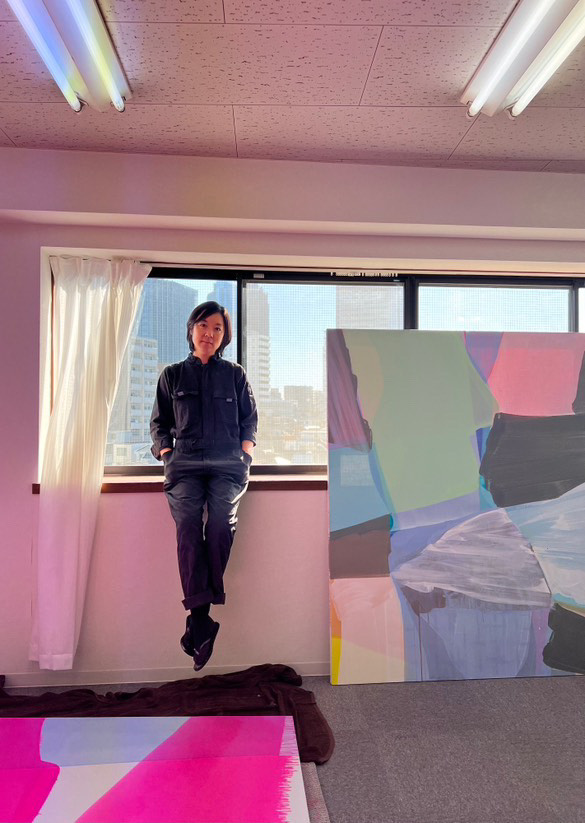
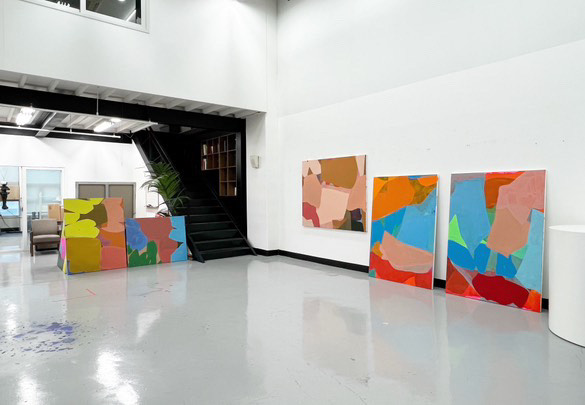
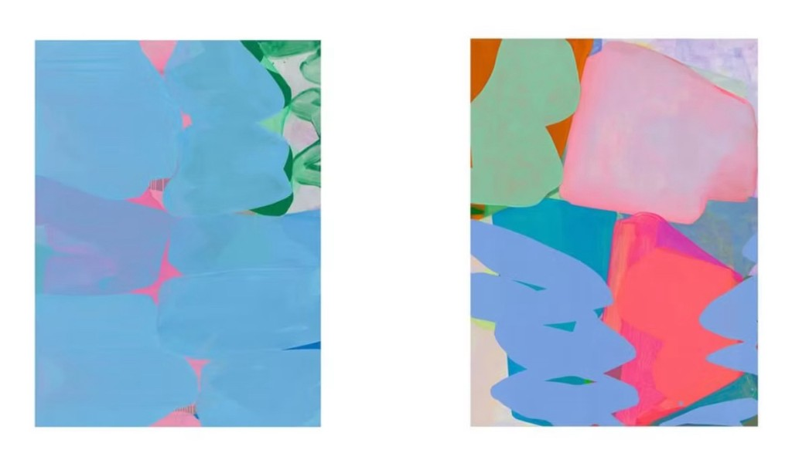

This is the first interview in a series of interviews that will feature emerging artists from around the world whose work focuses on color and abstraction. This series is a part of a forthcoming independent book to be published in 2025. The following is a brief conversation with artist Hyun Sun Jo.
Background: Artistic Practice
How did you become a painter?
My name is Hyun Sun Jo (b.1981). I was born in Seoul, Korea, and studied painting in San Francisco Art Institute (BFA in painting) and California College of the Arts and Craft (MFA in painting/drawing). I spent my whole 20s in San Francisco then I went back to Seoul spending my whole 30s there. Now, I’m in my early 40s, and I moved to Tokyo, Japan, as my mother lives here in Tokyo and I wanted a new environment. I’m actually quite familiar with the atmosphere of this city as I had been traveling back and forth from Seoul to Tokyo since when I was a child to visit my mother. Yet, Seoul and Tokyo are different in many ways; the culture, art, people, and customs are all different although the two cities are very close geographically.
I have always loved painting since I was a child and I’ve always wanted to become a professional artist. Many of my family members are musicians and so I have always loved music too. So, it is true that I was influenced by many musicians around me. But for me, painting was almost the only thing I wanted to pursue: I started painting very young, and I am still painting now.
Other than painting, I love music, literature, and photography.
It's interesting that you bring up Seoul and Tokyo, two very similar, yet different cities. For you, what are some significant differences between working in Japan and Korea? Do you have any preference for either location?
I have two studios now, one in Seoul and the other one in Tokyo. I share my studio with my husband Gun Woo Shin who is a sculptor. Our studio in Seoul is quite spacious as we both love to make large works, but in Tokyo, our studio is very small as it is hard to find a big studio space in Tokyo. Studio space matters to artists and it affects the scale of the works artists make. For me, personally, dealing with the size of the studio space is interesting. It leads me to think about the size of my work, how specifically I want to create my work. Everything in Tokyo is small so it makes me think about not only the size of the painting, but also how much space a human being needs to live.
Other than the idea of size, there is the danger of earthquakes and volcanic issues, which feel very physical in Japan. The anxiety of geographical issues affects the psychology, culture, history, and overall life in Japan. Meanwhile, in Korea, there are geopolitical issues in terms of war and conflict that are laid deep inside Korean culture. I guess, as I grew up and lived experiencing both cultures, I got used to those issues. Yet, I love both countries. They are geographically close and have complex historical issues. Life and culture might look similar from a distance, but if you look at them up-close, they offer two very different views on most things in life. I’m a traveller and I like to learn about new things, and so far it has been so interesting to relocate to Tokyo. I’m ready to explore the art world here as well. I plan to keep both studios in Seoul and Tokyo for a while so that I can work and show in both cities/countries.


© Hyun Sun Jo. Courtesy the artist / Hyun Sun Jo, Tokyo Studio 2024
© Hyun Sun Jo. Courtesy the artist / Hyun Sun Jo, Seoul Studio 2023
We love this quote from your last exhibition Pale Deep as it articulates a delicate balance between intuition and logic in your work:
“Jo Hyunsun's abstract-like paintings are closer to intuitive gestural expressions and further from structured compositions with specific internal logic. The fundamental principle of painting involves translating mental concepts into visual form, with the physical drying time of oil paint on canvas being an inextricable factor. The constant ebb and flow of the pace of her thoughts perturb and transform her paintings, often at a cadence that does not allow for the paint to dry”
What role does time play in your creative process?
I paint with oil and mix it with a good amount of solvent which requires a long drying time. I sometimes paint wet-on-wet but most of the time I put one layer of color/shape and let it dry before I add the next layer on top of it. I need 3-4 days until it dries (or a week or two in winter). I lay down several canvases on the floor and paint them in turn. I have to wait and wait and the time spent waiting gives me the chance to have many different thoughts. I allow happy accidents in my work such as drips and smearing and they lead me to other decisions-making processes. I like painting with transparent and translucent layers of paint and work with the contrasts between transparency and opacity. So, to me, color and time go together. I move around the laid down canvases, and it's not only color and time, but also my physical body within the space that are all related in my painting process.
My painting is gestural and intuitive, but at the same time, it’s not only intuitive, since the thought process intrudes upon the intuitive part. I have to wait and see how the layered colors and shapes will create new colors and shapes.
While paintings are drying, I often make drawings using oil pastel both large and small (I use oil pastel because the marks it leaves on paper resemble the brushstrokes of painting in a way.) Most of the drawings are close-ups or segments of my paintings. I repeat making the drawings, titled <Thumb Index> drawings. And here, I’m involved again with decisions I need to make. I make several drawings of some selected segments of my paintings by changing colors, enlarging, downsizing forms, making the forms upside down, changing left to right, relocating shapes just like what photoshop does.
Drawing takes less time and the result comes much more quickly, so it gives me a chance to (re)think all the decisions I make for a painting. This makes me wonder if my work can be called fully “intuitive”, as I go back and forth between painting and drawing: There is the gap between the layers of a painting that takes time and gives me a chance to pause and think, as well as the gap between painting and drawing that gives me a chance to view my own work in a different perspective.
Speaking of time, as we are approaching the new year, what are some projects or concepts that you are looking forward to in 2025?
I have two shows coming up in 2025 in Seoul, one with Noon Contemporary and another with Gallery We. I’m currently having conversations with various directors and curators of the spaces where I will be showing and most likely they will be two-person shows. There is a possibility that one of them is going to be a solo show, but personally, I love two-person shows, so I want to discuss that option with the curators.
In addition, I’m looking for a bigger studio than the one I have in Tokyo if I can. In terms of my practice, I have been concentrating mainly on works on canvas and works on paper for a while, but sometimes I use wood panels to make work. I would like to keep experimenting with wood as a painting/drawing surface along with canvas and paper.

(Left) Hyun Sun Jo, Puddle Jumper Lumpy blue, 30×97cm, oil on
canvas, 2023
(Right) Hyun Sun Jo, Puddle Jumper Wiggle, 130×97cm, oil on canvas,
2023